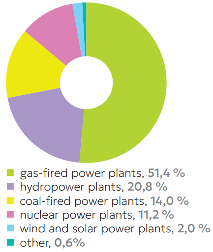

SECOND NATIONALLY DETERMINED CONTRIBUTION OF THE RUSSIAN FEDERATION
as part of the implementation
of the Paris Agreement dated December 12, 2015
The Russian Federation participates in the implementation of the United Nations Framework Convention on Climate Change (hereinafter referred to as the Convention), the Kyoto Protocol dated December 11, 1997 and the Paris Agreement dated December 12, 2015.
The Russian Federation is included in the Annex I of the Convention as a Party to the Convention undergoing the process of transition to a market economy. Guided by the principle of equity and common but differentiated responsibilities and respective capabilities, in the light of different national circumstances, the Russian Federation makes consistent and increasingly ambitious efforts to achieve the long-term global temperature goal in accordance with Article 2 of the Paris Agreement.
As part of the Paris Agreement implementation, the Russian Federation announces a target for limiting greenhouse gas emissions, which provides for
a reduction of greenhouse gas emissions |
by 2035 to 65-67% |
compared to the 1990 levels, |
|
taking into account the maximum possible absorptive capacity of forests and other natural ecosystems, and subject to sustainable and balanced socio-economic development of the Russian Federation, as well as to its non-discriminatory access to the equipment and technologies, necessary to reduce (mitigate) greenhouse gas emissions and/or increase their removals.
NATIONAL CIRCUMSTANCES
The Russian Federation is located on an extensive territory in the northern hemisphere, which covers several climatic zones with different natural conditions.
According to long-term observations carried out by the Federal Service for Hydrometeorology and Environmental Monitoring (hereinafter referred to as Roshydromet), since the mid-1970s, the mean annual surface air temperature in the Russian Federation has been growing by an average of 0.5°C over 10 years, (the temperature growth rate increased by 0,03°C compared to 2019), which is 2.6 times higher than the growth rate of the average global air temperature (0.19°C for 10 years).
The growth rate of the mean annual surface air temperature in the Arctic zone of the Russian Federation (comprising 23% of the entire country territory) is 3,7 times higher than the growth rate of the global mean surface air temperature (0,70°C in 10 years), which makes this region one of the most vulnerable to climate change impacts on the planet.
The main drivers of emissions changes in Russia are general trends in economic development, increase in energy efficiency, as well as in the overall efficiency of the Russian Federation economy and shift in the structure of the energy mix.
Forest fund lands in the Russian Federation comprise more than 1.1 billion ha (representing 66% of the country), with managed forests accounting for 741.7 million ha, contributing to an average annual absorption of 1.2 billion tons of CO2-eq. since 1990. Forests of the Russian Federation account for approximately 20% of the world's forest resources, highlighting the significance of preserving stored carbon and increasing the potential for carbon sequestration within Russia, including through inter alia global voluntary climate cooperation mechanisms. The Russian Federation also possesses significant water resources: large rivers situated on its territory make it possible to provide drinking water to the population and utilize their potential for hydropower development.
For the last 5 years, the key economic indicators have been restrained by the COVID-19 pandemic in 2020 and external negative factors since 2022, such as unilateral measures and sanctions, blocking the access to foreign equipment, technology and capital markets. The Russian Federation as a large greenhouse gases emitter, acknowledges its responsibility to contribute to the global efforts in taking action to address climate change, represents its second NDC, as ambitious as possible, given the national circumstances.
CHARACTERISTICS OF THE 2030 NDC
AND 2035 NDC
NDCs of the Russian Federation are aimed at achieving the objectives of the Paris Agreement and are considerate of the necessity to ensure sustainable economic development of the Russian Federation. NDCs recognize the importance of preserving and enhancing the removal capacity of forests and other ecosystems, taking into account the maximum possible absorption capacity of forests. The Russian Federation finds it unacceptable to use the Paris Agreement and its mechanisms as a tool to create barriers to sustainable socio-economic development of the Convention Parties.
The Russian Federation considers it essential that situation of countries, particularly developing countries, with economies that are vulnerable to the adverse effects of the implementation of measures to respond to climate change, is taken into consideration in the implementation of commitments under the Convention and the Paris Agreement. This applies notably to countries with economies that are highly dependent on income generated from the production, processing and export, and/or consumption of fossil fuels and associated energy-intensive products, and/or such use of fossil fuels, which creates serious difficulties in switching to alternatives.
Until 2020, the target for limiting greenhouse gas emissions in the Russian Federation was set on its own initiative and was limited to no more than 75% of the 1990 level1.
The preliminary NDC, announced in 2015 in support of the Lima Call for Climate Action, provided for limiting anthropogenic greenhouse gas emissions in the Russian Federation to 70–75% of 1990 emissions by 2030, considering the maximum possible absorption capacity of forests.
The first NDC of the Russian Federation, introduced in 2020, is more ambitious compared to previous commitments of the Russian Federation and provides for a reduction in greenhouse gas emissions by up to 70% by 2030 relative to the 1990 level, taking into account the maximum possible absorptive capacity of forests and other ecosystems and subject to sustainable and balanced socio-economic development of the Russian Federation.
The current second NDC is consistent and more ambitious compared to the previous NDC and provides for a reduction in greenhouse gas emissions to 65–67% compared to the 1990 levels by 2035, taking into account the maximum possible absorptive capacity of forests and other ecosystems and subject to sustainable and balanced socio-economic development of the Russian Federation and its non-discriminatory access to equipment and technologies, necessary to reduce (mitigate) greenhouse gas emissions and/or increase its removals. These commitments are formed in the context of the uncertainties described below.
The implementation of first and second NDCs may provide a cumulative reduction of more than 66,6 billion tons of CO2-eq2 of net greenhouse gas emissions for the period 1990–2035, which is a crucial contribution to achieve the global temperature goal of the Paris Agreement.
UNCERTAINTIES
The key task of the Russian Federation is to ensure sustainable economic growth while addressing climate change at the national and global levels. However, geographic, economic and infrastructural factors certainly infiuence the development of the national climate policy, in particular the deployment of low-carbon technologies, therefore further diversification of regional and sectoral climate policy implementation plans takes place.
The set of climate measures can be fully implemented subject to a number of conditions, including ensuring the technological neutrality principle (non- discrimination of the emission reduction results, including from low-carbon nuclear and hydro-power projects), non- discriminatory conditions for climate projects implementation and barrier-free access to international verification infrastructure, as well as effective development of international cooperation.
National development trajectory should provide unconditional and guaranteed energy access for the population, in particular for maintaining life safety in the northern regions, as well as the uninterrupted operation of generating equipment and heat and cooling supply systems under conditions of climate-related increase in the frequency of temperature extremes (extremely high and extremely low temperatures) across the Russian Federation.
In addition to the need to ensure sustainable socio-economic development, the Russian Federation, the first country in the world by total area, located in multiple climatic zones, is currently facing barriers and external economic constraints, such as restrictions in access to foreign equipment, technologies, services, capital and carbon markets.
All of the above increases costs of transforming the economic growth model and optimizing the country’s economic structure to achieve climate goals. The Russian Federation witnesses emissions- related intensification of economic processes in energy and industry.
NATIONAL POLICY ON GREENHOUSE GAS EMISSIONS REDUCTION
The system of views on the goal, principles, content and pathways of implementing the unified state policy of the Russian Federation on the issues related to climate change and its consequences is refiected in the Climate Doctrine of the Russian Federation . The Climate Doctrine sets a long-term objective of achieving carbon neutrality by 20603.
The Russian Federation has adopted the National Strategy for Long-Term Development with Low Greenhouse Gas Emissions for the period until 2050 4 (hereinafter referred to as the LT-LEDS). The LT-LEDS outlines approaches to the development of sectors of the economy and public administration that are responsible for greenhouse gas emissions and act as their sinks, taking into account the objectives of sustainable development with low-level greenhouse gas emissions.
The LT-LEDS ensures the mutual linkage of the international climate agenda objectives to reduce greenhouse gas emissions with the economic capabilities of the Russian Federation to transition to low-carbon technologies and with ensuring national socio-economic development interests.
To ensure competitiveness and sustainable economic growth in the global energy transition, the LT-LEDS provides for general economic and sectoral measures aimed at development of low-carbon energy, active digitalization and electrification of the economy, development of new industries, creation of high-productivity jobs, improving the efficiency of raw materials and production processes, development of modern solutions and materials that contribute to the reduction of greenhouse gas emissions, and implementation of the principles of circular economy. These include the development of renewable energy sources (hereinafter referred to as the RES) and the use of low-carbon nuclear power, emissions reduction in the coal industry, utilization of associated petroleum gas, and reduction of leakages in the energy resources extraction and production, expansion of secondary energy resources use, development of the waste collection and recycling system, enhancement of energy efficiency in buildings, electrification of transport, accelerated implementation of the best available technologies.
The Russian Federation has established a regulatory basis to test carbon pricing mechanisms 5. As part of the regional emission limitation experiment, the Sakhalin Region was tasked with achieving carbon neutrality by December 31, 2025, and met the goal earlier than the established deadline. The experiment sets emission caps on the largest emitters in the region.
In 2022, the Federal Science and Technology Program in the field of environmental development of the Russian Federation and climate change for 2021–2030 was adopted and an innovative project of national importance “The Integrated National Monitoring System for Climate-Active Compounds” (hereinafter the Russian Climate Monitoring System ) was launched to study climate change issues and develop measures for low-carbon transformation of the economy.
The Russian Climate Monitoring System envisages extensive work in several scientific areas that are critical for management decisions in low-carbon development policies and adaptation to climate change: monitoring of greenhouse gas emissions and removals by marine and land ecosystems, modelling and forecasting of climate change, decarbonization scenarios modelling and estimating greenhouse gas emissions and removals for economy and industries.
The government policy on reducing anthropogenic impacts includes tools for private sector engagement in activities that contribute to reducing greenhouse gas emissions and enhancing greenhouse gas sequestration. The Russian Federation has established an infrastructure to manage climate projects and circulation of their results (carbon units), approved National Standards in the field of climate, implemented ISO standards, and there is a functioning institute of Accreditation for Validation and Verification of Greenhouse Gases in the National System of Accreditation and Carbon Unit Registry.
As of September 2025, 73 climate projects have been registered in the Carbon Unit Registry, 34.3 million carbon units have been issued, with the total projected output for all registered projects of 95.53 million units. Almost 154.4 thousand carbon units have been retired to reduce carbon footprint and to fulfill the quota within the framework of the Sakhalin experiment.
The state accounting of greenhouse gas emissions allows to monitor companies’ efforts to reduce greenhouse gas emissions. Under this framework emitters with emissions of over 50 thousand tons of CO2-eq./year are required to submit greenhouse gas emissions reports to the State information system in the field of energy conservation and energy efficiency improvement on an annual basis.
In 2021, the architecture of the national sustainable finance was created. It defined the main directions of sustainable development6 and criteria (taxonomy) for sustainable (including green) development projects7. If the established requirements are met, the project can be classified as sustainable and gain access to relevant financing tools, including sustainable bonds and other forms of “green” financing.
The national taxonomy for financing transitional projects simultaneously meets international standards and pursues national interests, the implementation of which makes it possible to reduce emissions in carbon- intensive industries over a short period of time, without the risk of social and economic shocks. Since 2023 a taxonomy of social projects has been in effect8.
As a result, the Russian Federation has shaped a comprehensive national system for issuing sustainable financial instruments.
To date, the amount of sustainable funding verified according to national standards has reached almost 0.5 trillion rubles9:
17 issues of “green” bonds for a total amount of 349 billion rubles10
1 issue of adaptation bonds worth 5 billion rubles11
1 “green” loan for 110 billion rubles12
The list of “Sustainable development sector” securities, verified according to international and national standards, includes 36 issues worth 422 billion rubles13 out of which:
«green» bonds account for 232 billion rubles14
adaptation bonds – 125 billion rubles15
social bonds – 22 billion rubles16
sustainable development bonds – 33 billion rubles17
climate transition bonds – 10 billion rubles18
In 2024, the volume of such issuances amounted to 58.2 billion rubles19 and, in 2025, the volume reached 10 billion rubles20 (as of July 2025).
CLIMATE CHANGE MITIGATION PRACTICES
Energy
One of the tasks for achieving national goals in the field of climate policy is to reduce greenhouse gas emissions in the energy sector, considering the economic effectiveness of necessary measures to ensure the balanced socio-economic development of the Russian Federation.
The Russian Federation has adopted the Energy Strategy for the period up to 2050 21 (hereinafter referred to as the Energy Strategy), which includes a transition to more efficient, fiexible and sustainable energy. It will result in reducing the negative impact of the fuel and energy industries on the environment and adapting them to climate change, including through an increase in energy efficiency and development of low– carbon technologies.
The Energy Strategy involves:
the construction of new low-carbon generation facilities (including low-carbon nuclear energy) as an alternative to carbon-intensive fuels
increasing the efficiency of renewable energy generation
the rational use of associated petroleum gas and minimizing its flaring
the creation and use of low-carbon and resource-saving technologies for the production, transportation, storage and use of energy resources, including hydrogen technologies, technologies of carbon capture utilization and storage (hereinafter referred to as the CCS)
Since February 2024, the Russian Federation has been operating a certification system for the origin of electricity, created within the framework of the federal Clean Energy project. The system allows consumers to buy electricity produced from renewable and low-carbon sources, contributing to environmental protection and tackling climate change.
As of August 2025, 196 generating facilities with a total capacity of 41,2 GW were registered in the system, which allowed to certify over 136 billion kWh of electricity as “clean”. Companies from the key economic sectors have already used the system’s tools and the volume of the deals made has reached 53 billion kWh.
As of 2024, about 37% of electricity generation in Russia is low carbon (18.2% – nuclear power plants, 17.9% – hydropower and wind, as well as solar power plants – 0.8%). Moreover, natural gas, which has very low carbon emissions, accounts for 50 % of electricity production.
The structure of installed capacity of the power plants of the Russian Federation

Russian companies are implementing projects to build and maintain large and small nuclear power plants, large and small hydropower power stations, solar power stations integration, including solar panel integration into urban infrastructure.
TATNEFT implements a project using technology of CO2 injection into the aquifers intended to enhance oil recovery factor and reduce its carbon footprint. The company reduces fiaring at oil production and refining facilities and prevents unplanned methane emissions at oil production and storage facilities by introducing installations for capturing light hydrocarbon fractions.
RUSHYDRO is one of the largest Russian energy holdings, one of the world leaders in the field of hydropower (70 hydropower facilities). It is a leading company in RES-based electric energy production, developing generation based on the energy of water fiows, solar, wind and geothermal energy (more than 80% of electricity is generated using RES).
ROSATOM, one of the world leaders in the field of nuclear energy, implements projects for construction of large and small capacity nuclear power plants that allow to reduce dependence from fossil fuels and provide stable electricity and heat supply based on low-carbon energy. The company is also implementing projects for the construction of wind power plants, which contribute to increasing the share of renewable energy in the energy mix.
SIBUR Holding prevents greenhouse gas emissions by processing approximately 20 million cubic meters of associated oil gas annually.
INTER RAO energy supply companies provide low-carbon electricity based on contracts signed with RES suppliers. As of 2024, 516 million kWh were delivered under the “green” contracts and 29 million kWh through retirement of certificates of origin. The company is implementing a climate project to modernize the Condensing Power Plant unit in Kostroma. The first phase resulted in the reduction of 82 791 tons of CO2-eq of emissions. To date, 55 664 carbon units have been issued.
The Russian Federation is developing hydrogen energy based on a set of strategic documents: the Energy Strategy, the “Concept for the Development of Hydrogen Energy in the Russian Federation”22 and the Roadmap for the development of the high-tech direction “Development of Hydrogen Energy for the period up to 2030”. Priority measures in this area include the development of competence centers and engineering for hydrogen energy technologies, government support for technology development, pilot and commercial projects for production, transportation, storage and use of low-carbon hydrogen, etc.
There is a special supersite on the territory of the Sakhalin region , within the framework of “Eastern hydrogen cluster”, which is dedicated to conducting field tests and approbation of hydrogen equipment on experimental sites, linked to existing infrastructure.
The Russian business is shaping LNG production, hydrogen and ammonia synthesis, and developing technologies for capturing and storing greenhouse gas emissions in order to create affordable and environmentally friendly manufacturing infrastructure.
NOVATEK applies its own LNG production technologies with an innovative system for cooling natural gas in the Arctic region. The company is also developing R&D and designing low-carbon hydrogen and ammonia production facilities that capture more than 90% of CO2 with subsequent underground storage and using energy efficient technological solutions.
GAZPROM prevents greenhouse gas (methane) emissions during the repair of sections of main pipelines by using mobile compressor stations.
Transport
Resource saving in the transport sector, including reconstruction of transport infrastructure facilities, significantly reduces greenhouse gas emissions by cutting the costs of production, processing and transportation of primary resources and materials, and lowers production and consumption of waste destined for landfills.
The Russian Federation is actively implementing solutions to improve energy efficiency and reduce the carbon intensity of transport, including low-carbon fuels, the development of hydrogen transport and hydrogen fueling infrastructure, the development of electric vehicles and the necessary fueling and charging infrastructure.
The Transport Strategy of the Russian Federation up to 2030, with a forecast for the period until 203523, includes measures for the electrification of transport, as well as state support for the renewal of the rolling stock of land passenger transport and rail transport in agglomerations, introduction of information technologies for control and positioning, intelligent information systems for monitoring and management of transport. Large-scale electrification of railway tracks is underway, resulting in more than 85% of passenger and freight railway transportation carried out by electric traction.
RZD is actively replacing old locomotives with modern and environmentally friendly models, which allow to reduce the amount of greenhouse gas emissions per ton of cargo by 10 times.
EVRAZ is a producer of “green” rails, with the carbon intensity of steel smelting of 0.4 t CO2-eq. per ton rolled.
The Russian Federation sees an active implementation of projects for production of electric buses and gas-powered buses, which contribute to reducing the environmental impact of transport in the regions. Electric public transportation, electric car sharing and electric taxis are being developed, along with the creation of dedicated spaces for electric car charging and the construction of new electric charging stations.
The city of Moscow is paying great attention to the construction of modern electric bus parks. In 2022, the largest electric bus park in Europe, “Krasnaya Pahra”, was opened. In 2024, more than 70 electric bus lines were launched in Moscow and over 800 innovative electric traction vehicles were installed. The new equipment and charging infrastructure will allow the city to have more environmentally friendly routes. By replacing one ordinary bus with an electric one, CO2 emissions are reduced by 60 tons per year.
KAMAZ produces gas-powered equipment using compressed and liquefied natural gas. The total fieet of trucks and buses operating on natural gas, produced by KAMAZ exceeds 17.5 thousand units. Electric vehicles in particular electric buses, production, is also a significant activity of the company.
Mosgortrans, Organizer of Transportation, Sitronics use innovative types of electric land and water passenger transport, in particular electric buses and electric vessels of the “Ecobus” and “Ecocruiser” class, and implement the necessary infrastructure solutions, including charging stations, dispatch systems and “Ecostation” water stations. This allows to create an efficient and environmentally friendly public urban transport system.
ROSATOM develops comprehensive solutions for the development of electric transport in the Russian Federation. Two lithium-ion battery factories are being built in Moscow and the Kaliningrad region. A full life-cycle production site for lithium- ion batteries is being created in the Nizhny Novgorod region. It covers all stages from extraction of raw materials to processing and reuse of useful elements. The company is also developing electric vehicles charging infrastructure in Russia.
Construction, Housing and Utilities
Construction, housing and utilities are the second-largest energy consumer, second to the industrial production only, and one of the largest greenhouse gas emitters.
The Strategy for the Development of the Construction Industry and Housing and Communal Services of the Russian Federation for the period up to 2030 with a forecast up to 20351 provides measures to reduce emissions from construction, housing and public utilities, with an emphasis on enhancing the energy efficiency of new buildings, decommissioning outdated non- energy-efficient housing, constructing “green buildings”, and creating a comfortable and balanced urban environment.
The city of Moscow has developed an integrated system of measures to improve the energy efficiency of buildings, which has resulted in a reduction in greenhouse gas emissions, amidst the city's active economic development, and the commissioning of over 60 million square meters of residential space since 2011. Key elements of the system are sectoral programs for major repairs and housing renovation, reorganization of industrial zones.
The integration of environmental construction requirements into the system of technical regulation and the adaptation of building standards to global climate change are among the priorities of the Russian Federation in the development of the construction sector. Thus, the country is actively working to improve national standards of “green” construction and their implementation.
DOM.RF, a development institute in the housing sector, has developed a Standard for Integrated Territorial Development that regulates approaches to the balanced development of residential areas and the formation of a comfortable urban environment, as well as the national “green” standards for residential and individual housing construction. In 2024, energy- efficient housing with energy efficiency class A and above accounted for 33% of all multi-storey residential buildings. DOM.RF implements a mechanism to support the development of “green” housing construction, providing subsidies with an increased interest rate of 1 or 2 percentage points, depending on the energy efficiency class of buildings.
Russian companies take an active part in the implementation of the Smart City program, which creates sustainable energy- efficient urban spaces, including automation and digitalization of home energy supply management.
The Russian Energy Agency (REA) of the Ministry of Energy of the Russian Federation, SBERBANK, ROSTELECOM and ROSATOM are implementing energy efficiency improvement programs in large cities that provide for the introduction of Smart City systems. The systems optimize heat supply and energy consumption, use intelligent energy management systems, digitalization and automation of energy facilities, develop RES and create a charging infrastructure for electric vehicles.
Industrial processes and product use
The Russian Federation is a major global exporter of raw materials and industrial goods, including in the metallurgical and the petrochemical industries. Russia also supplies the world markets with technologies required for the operation of energy infrastructure such as nuclear power plants, solar power plants and wind power plants. The Strategy for the Development of the Metallurgical Industry of the Russian Federation for the period up to 2030 25 provides for reducing the energy intensity of metallurgical production by increasing its energy efficiency, updating information in the best available technologies reference books and developing the clean mechanical engineering industry.
In order to reduce carbon emissions industrial companies are implementing various initiatives to modernize equipment and improve technological processes.
SEVERSTAL is actively implementing technologies aimed at reducing the carbon footprint of its products and producing “green” steel with low greenhouse gas emissions. The company is transforming its core technological chain: a high-tech production of iron ore pellets is under construction, the share of natural gas consumption in blast furnaces is increasing, the energy efficiency of production is enhancing, while inefficient capacities are being decommissioned.
RUSAL produces aluminum under the “ALLOW” brand with a low carbon footprint, which is significantly lower than the industry average due to the use of hydropower, ensuring its environmentally friendly and sustainable production.
NORILSK NICKEL also produces low-carbon metals, primarily nickel, copper and platinum group metals, which are widely used for electric vehicle batteries manufacturing, automotive catalysts, solar panels, wind turbines and other technologies that contribute to energy transition. Questions about greenhouse gas emissions are included in the scope of comprehensive inspections of suppliers of the mineral raw materials and in the assessment of the sustainable development practices of suppliers of goods, works and services.
NOVATEK is implementing a project to create CCS storage facilities for reliable underground storage of CO2 in rock formations in order to reduce the carbon footprint of manufactured goods in various industries (oil and gas production, energy, metallurgy, petrochemistry and gas chemistry). The company is also developing small-scale LNG production facilities to provide consumers with gas-engine fuel and for the needs of autonomous gasification in the domestic market instead of carbon-intensive and less environmentally friendly fuels such as diesel and residual fuel oil.
Agriculture
The Russian Federation is actively introducing innovations in agricultural production aimed at reducing environmental impact. Low-carbon energy-saving agricultural technologies are being developed in the production of agricultural crops, technological and innovative solutions are being introduced to improve the efficiency of farming and animal husbandry.
Russian companies offer comprehensive solutions to increase crop yields and fertility of land using innovative technologies.
PHOSAGRO is developing an agrocalculator that helps count the need for nutrients, taking into consideration the soil and climatic characteristics of the crops, and provides recommendations on how and when to apply mineral fertilizers.
EUROCHEM produces high-tech mineral fertilizers with controlled nutrient release that minimize greenhouse gas emissions and prevent contamination of soil and water resources. The company develops technologies for the utilization of carbon dioxide generated during the ammonia production by turning it into useful products such as carbamide and food grade carbon dioxide. The company's products are used in agriculture, the food industry, etc.
The National Movement of Conservation Agriculture together with the Agricultural Carbon Polygon has developed the Carbon Footprint Calculator software service for calculating greenhouse emissions from crop production. The calculator will allow farmers to conduct a “climate audit” of crop production, assess the structure of the carbon footprint and optimize the main sources of greenhouse gas emissions.
Sustainable forest management
Forests play a crucial role in addressing climate change, as the main natural sink of CO2 on land.
The Russian Federation is implementing the state program “Forestry Development” and the Federal project “Forest Conservation”. These include improving the efficiency of forest management, protecting forests from fires and from harmful organisms, forest reproduction and afforestation. In January 2025, the Forest Code of the Russian Federation fixed the concept of a forest- climate project and defined the procedure for its implementation.
Russian companies are actively involved in the implementation of reforestation works, as well as forest-climatic projects.
As part of the reforestation efforts, Ilim uses closed root system planting technology, which improves the quality of forest reproduction due to the high survival rate of seedlings.
SIBUR Holding implements two forest- climate projects. As part of the “Green Formula” project, carbon-depositing plantings are being created in previously non-forest land uses in the Republic of Tatarstan, Nizhny Novgorod and Tyumen regions. The project “Creation of carbon- depositing plantations in burned areas in the forest-steppe zone of the Voronezh region” is focusing on restoring ecosystem functions of territories that have been impacted by fires. The project helps to increase CO2 sequestration, preserve biodiversity and restore soil cover, as well as to reduce the risk of forest fires by changing the tree species composition.
RUSAL is implementing a forest-climate project for aviation protection of forests, providing patrolling and, if necessary, extinguishing of forest fires. The project's activities include the purchase of new technical equipment and fire-fighting equipment, recruitment, training and medical care for firefighters.
VCL is implementing a forest-climate project to increase greenhouse gas sequestration in the Poronaisky forestry area of the Sakhalin Region.
Waste
The Russian Federation has a comprehensive strategy for the management of municipal solid waste 26 (hereinafter referred to as MSW), which aims to create an effective waste management system. The federal project “Circular Economy” is aimed at creating a closed-loop economy that will ensure sorting of 100% of the volume of MSW generated annually by 2030.
The implementation of the State program “Environmental Protection” aims to reduce the anthropogenic impact on the environment by doubling the use of secondary resources and secondary raw materials in the economy by 2030.
The Russian Environmental Operator has created an information system for monitoring MSW facilities using unmanned aircraft systems and artificial intelligence tools. In 2022–2024, the company developed 998 digital landfill models using aerial laser scanning, which allow regions independently determine the operational life of MSW facilities.
SIBUR Holding successfully produces polymer products containing secondary raw materials, which comprise up to 30% of its volume.
NATIONAL POLICY ON CLIMATE CHANGE ADAPTATION
SINTEZ OKA is implementing a climate project for artificial reforestation of the Igumnovsky district forest plot of the Dzerzhinsky City forestry in the Nizhny Novgorod region. The implementation of the forest-climate project also contributes to the biodiversity conservation of the Dzerzhinsky Forestry through the restoration of native species trees.
The climate policy of the Russian Federation is also aimed at forming an effective system of adaptation to climate change based on a comprehensive consideration of climate risks, as well as on the country's territory, economic sectors and subjects of economic activity exposure and vulnerability to them.
The main directions for implementing climate policy in climate change adaptation are:
enhancing the economic mechanisms that facilitate climate change adaptation and mitigation measures
providing scientific and information capacities, as well as human resources for the development and implementation of measures to adapt and mitigate anthropogenic impacts on the climate
ensuring international cooperation in the development and implementation of climate adaptation and mitigation measures
The national adaptation planning system ensures strengthened national adaptation capacities, increased resilience and reduced vulnerability to climate change. The system consists of national, industry, regional and corporate levels.
The implementation of the National Action Plan for first stage of adaptation to climate change was completed in 2022. As a result, a system of adaptation to climate change was established. It includes multi-level adaptation planning and an institutional and methodological framework for adaptation.
The National Action Plan for the second stage of adaptation to climate change for the period up to 202527 is currently being implemented. It provides for clarifying and expanding the methodological framework on adaptation, including climate change damage assessment, providing data on climate change scenarios in the Russian Federation for use by federal and regional authorities of the Russian Federation and the private sector in adaptation planning, integration of adaptation into strategic planning of socio- economic development of the country's regions, assessment of climate change damage to publicly owned infrastructure.
Regional and 10 sectoral adaptation plans have been approved in the Russian Federation. Sectoral plans are approved for the most climate-dependent sectors of the economy: transport, fuel and energy sector, construction and housing, agriculture and fisheries, environmental management, health, provision of sanitary and epidemiological welfare of the population, economic activity in the Arctic zone of the Russian Federation, civil defense, protection of population and territories against emergency situations of natural and anthropogenic origin, industry, technical regulation, domestic and foreign trade. These plans address the following tasks:
ensuring access to water resources and drinking water
food and agricultural production
reduction of morbidity and mortality due to climatic factors
maintaining ecosystems and biodiversity, including the conservation and reproduction of forests
improving the resilience of industrial and transport infrastructure, as well as human settlements
reducing risks to the traditional livelihoods of the indigenous peoples of the North
Assessment of climate risks, formulation of plans and evaluation of the effectiveness of their implementation are carried out in accordance with unified methodologies established at the federal level.
In particular, the impact and vulnerability assessment was carried out during the preparation of the “Third Assessment Report on Climate Change and its consequences on the territory of the Russian Federation” by Roshydromet. The Unified State Emergency Prevention and Management System is functioning to provide early warning of emergencies. The system includes an “Automated Information Management System” and an “Atlas of Hazards and Risks”.
CLIMATE CHANGE ADAPTATION PRACTICES
Adaptation of urban territories
The growth of the urban population increases the burden on ecosystems serving urban areas. In addition to anthropogenic emissions, cities tend to consume more resources than they produce, which leads to resource depletion, waste accumulation, loss of biodiversity and, as a result, increased vulnerability of the population to extreme natural events.
The Spatial Development Strategy of the Russian Federation for the period up to 2030 and with a forecast up to 203628 contains measures, including in the field of climate change adaptation, intended to safeguard property from the effects of natural hazards and climate change.
Adaptation activities under implementation are integrated into the system of spatial planning of cities and urban settlements, as well as urban zoning, which ensures that climate factors are considered in the development of cities and settlements.
The city of Moscow is prioritizing the upgrade of critical systems, including electricity and heating networks and gas pipelines in order to increase the resilience of urban infrastructure to climate change. By reconstructing power lines, heat and gas networks, peak loads can be addressed and reserve capacity can be provided for the system during periods of abnormal weather conditions.
The Moscow government is implementing measures to preserve the green fund, such as planting wind- and frost-resistant trees and shrubs that provide dense foliage and adapt well to urban conditions; increasing the frequency of irrigation; additional spraying of fiower beds and tree watering, which contribute to improving resistance to predicted climatic changes.
SEVERSTAL produces high-strength and cold-resistant rolled products, dust and wind shields, gabions, sheet piles and sheet pile constructions, metal structures for construction of buildings and facilities in climate-sensitive regions. These products are used both in the locations of the company’s presence and in the projects of the company’s partners and customers in various regions of the country, including the regions of the Far East, the Far North, the Volga region and the South, as well as in major cities of Russia.
Monitoring of climate impacts on forest ecosystems
Climate change leads to large-scale deforestation, soil degradation, forest fires, droughts and fioods of territories. Therefore, monitoring climate impacts and undertaking prompt response measures become increasingly important.
The Russian Federation applies a wide range of adaptation measures in the forest sector: from the introduction of prompt response systems to the localization of fires and monitoring illegal felling. An integrated approach to monitoring and preventing forest fires is carried out with participation of government agencies, large companies and scientific institutions.
ROSCOSMOS together with the Russian Ministry of Emergency Situations is engaged in improving the space monitoring system for emergencies to increase the efficiency and reliability of space information used in the field of protecting the population and territories from emergencies. For each thermal point, attached to a corresponding territory, a satellite image upload tool has been implemented, which allows to monitor objective information and identify possible sources of landscape (natural) fires in advance.
Russian companies are actively using breeding methods and introducing new technologies to enhance the adaptability of crops to changing climatic conditions.
AGROPLASMA, being the largest seed producer in the Russian Federation for growing varieties and hybrids of vegetable and grain crops, carries out accelerated breeding of sorghum and sunfiower varieties using marker (MAS) and cellular technologies, which contributes to high germination and yield of seeds.
SEGEZHA Group has implemented the “Segezhales” Automated Dispatch System for regular monitoring of the use of forests at all stages in real time – from the moment of cutting the tree on the site to receiving the order by the customer.
ROSTELECOM has launched a large-scale project in the forest area of the North of Russia. The equipment allows to detect a smoke formation at the distance of up to 20 kilometers and transmit the coordinates of the fire source to the dispatching center of the region.
The Skolkovo Institute of Science and Technology has developed a predictive model for estimating the likelihood of forest fires.
Sustainable agriculture
LUKOIL conducts hydrological, morphometric studies and observations of water objects that are subject to extreme low water and fiooding.
Being the largest company producing low-carbon aluminum and renewable energy, EN+ Group , in partnership with the Institute of Water Problems of the Russian Academy of Sciences and the
Y.A. Israel Institute of Global Climate and Ecology, carried out a detailed assessment of physical climate risks and developed measures to adapt the Angarsk Cascade hydropower plant to climate change. These measures are aimed at adapting to a decrease in the annual volume of river runoff, increased risks of fioods and droughts and increased fire risk.
Climate change is a significant threat to food security, which requires effective adaptation solutions for agriculture.
The Russian Federation recognizes the importance of increasing the adaptive potential of agriculture and pays great attention to solving this problem. In the Russian Federation, the agroindustrial complex implements measures to increase the area of protective and anti-erosion forest plantations to protect crops from wind and water erosion, organize the use of tillage techniques aimed at maximizing the accumulation of moisture in the soil and the use of varieties and hybrids of crops adapted to changing climatic conditions.
Efficient water management
In recent years, climate change has had an increasingly significant impact on water resources: the interannual runoff distribution changes, and multidirectional trends in the annual runoff changes in various river basinsemerge. Improving water resources management is an important element of climate change adaptation.
The Russian Federation provides various climate change adaptation measures to establish a management system for the water management complex and enhance the country's technological sovereignty in the water management field. Several Russian companies are implementing initiatives to adapt water systems to climate change.
GAZPROM implements adaptation measures for production activities to changing climate and geocryological conditions, including geotechnical monitoring of production facilities, supervision of permafrost, and collecting and analyzing information about the natural and climatic conditions of the area.
RUSHYDRO implements a program for technical re-equipment and reconstruction of existing hydroelectric power plants, conducts works to strengthen dams and dikes, implements fiood protection engineering projects and a project to restore degraded land of ecosystems in the regions of its presence. In addition, the company continuously improves the systems of industrial environmental control and environmental monitoring.
NORILSK NICKEL launched a monitoring system comprising geotechnical and background monitoring for permafrost soils. The system provides rapid diagnostics of the resilience of buildings and structures and background state monitoring of permafrost in the Norilsk Industrial District. Additionally, NORILSK NICKEL is analyzing data on natural and climatic conditions in areas of its presence.
AKRON, a producer of mineral fertilizers, monitors the water level in monitoring and observation wells of hydrotechnical installations and waste disposal sites.
Adaptation strategies under permafrost conditions
To predict the development of negative geocryological processes, NOVATEK is implementing new 4D-modeling systems and digital geocryological passports – digital twins ofobjectsrefiecting the current geocryological situation and its risk forecast. The information is automatically updated based on real-time data.
Warming in the Russian Federation at high latitudes is occurring faster than the global average, therefore it is of particular importance to consider their adaptation capabilities, especially taking into account difficult natural and climatic conditions.
In 2020, ROSATOM commissioned the Akademik Lomonosov fioating nuclear power plant in the Arctic region in order to adapt the region's energy infrastructure to severe climatic conditions.
LUKOIL monitors permafrost, pipeline foundations and mothballed facilities near rivers and seacoasts.
Adaptation measures in the Arctic regions are becoming particularly important for the Russian Federation. The land area of Russia's Arctic territories covers 4.01 million square kilometers (23% of the country). The key climate risks of these territories are associated with a decrease in the technical reliability of infrastructure facilities in the conditions of thawing permafrost soils, the potential damage from their realization is estimated to 5 trillion rubles29 by 2050.
RUSHYDRO builds power supply facilities in permafrost regions. The ongoing project to modernize diesel power supply facilities in 72 remote and hard-to-reach settlements in Yakutia is a remarkable example of the group’s efforts.
These risks are considered within the framework of climate change adaptation plans for economic sectors, Arctic regions and corporate adaptation activities. A system for background monitoring of permafrost, foundations of pipelines, highways and railways and mothballed facilities near rivers and seacoasts is under development. Measures for the geocryological protection of infrastructure facilities are implemented, taking into consideration the monitoring data.
THE CONTRIBUTION TOWARDS GLOBAL EFFORTS TO ADDRESS CLIMATE CHANGE
The Russian Federation actively pursuits global efforts to address climate change and acts as a full-fiedged participant of the international climate dialogue.
The Russian Federation, as a Party to the Convention and the Paris Agreement , is committed to their goals and objectives. The Russian Federation is also actively involved in the development of international cooperation to tackle climate change at such multilateral platforms as the G20, BRICS, APEC, EAEU and SCO .
At international fora, the Russian Federation underlines the importance of a just transition to low-carbon development models using all available solutions to reduce greenhouse gas emissions, including low-carbon nuclear and hydropower, as well as natural gas as a transitional fuel, and emission reduction technologies for coal power generation. The Russian Federation advocates for a non- discriminatory approach to the international climate cooperation, which means the inadmissibility of unilateral restrictive measures and trade barriers that undermine the countries' efforts to achieve global climate goals.
As part of its contribution to the global efforts to tackle climate change, the Russian Federation actively joins various international initiatives:
the Glasgow Declaration on Forests and Land Use (2021)
the UAE Declaration on Sustainable Agriculture, Resilient Food Systems and Climate Action (2023)
the Baku Initiative for Climate Finance, Investment and Trade (2024)
the Hydrogen Declaration (2024)
the Green Digital Action (2024)
the Baku Initiative on Human Development for Climate Resilience (2024)
the Baku Harmoniya Climate Initiative for Farmers (2024)
the Declaration on Reducing Methane Emissions from Organic Waste (2024)
the Multisectoral Actions Pathways (MAP) to Resilient and Healthy Cities (2024)
the Enhanced Climate Action in Tourism (2024)
the Baku Global Climate Transparency Platform (2024)
As part of its BRICS presidency in 2024 , the Russian Federation incentivized the development of multilateral climate cooperation. The BRICS Contact Group on Climate Change and Sustainable Development has been launched to share experiences, data and best practices on addressing climate change in the context of sustainable development. The BRICS Framework for cooperation on Climate Change and Sustainable Development has been adopted. It includes all the major aspects of climate agenda, including the issues of just transition, climate change mitigation and adaptation, carbon markets and carbon pricing, climate finance, science and private sector engagement in climate change mitigation. The BRICS Climate Research Platform has been launched to expand scientific and expert cooperation on climate issues in the group, including issues of just transition, the use of ecosystem and technological solutions for low-carbon development and adaptation to climate change. To deepen cooperation in the field of carbon markets, the BRICS Carbon Markets Partnership has been launched, which will allow the BRICS countries to study each other's experience in creating carbon markets and implement joint climate projects.
Russian companies and organizations are also actively involved in the international climate agenda, joining various international climate change initiatives, such as:
the Oil & Gas Decarbonization Charter (2023)
Net Zero Nuclear Industry Pledge (2023)
The Russian Federation is actively developing bilateral climate cooperation with foreign countries. In 2024, bilateral Memorandums of Understanding on climate change and low- carbon development were signed with the relevant ministries of the Republic of India , the Republic of Azerbaijan and the Federal Democratic Republic of Ethiopia and in 2025 with the Sultanate of Oman. An interministerial Russian-Kyrgyz working group on climate and energy efficiency issues was launched in 2024.
Bilateral cooperation in the field of climate change is also pursued at the city-level. Regular international cooperation on climate change with foreign cities and regions is supported. The city of Moscow, for instance, has signed over 150 bilateral comprehensive documents, including on climate issues.
The Russian Federation contributes to the global reduction of greenhouse gas emissions and is the ultimate leader in the global low- carbon nuclear technologies export, including large- and small-scale nuclear power plants. As of June 2025, ROSATOM portfolio of nuclear power plant construction projects abroad consists of 41 power units (35 high- capacity nuclear power plants and 6 low- capacity nuclear power plants), including Kazakhstan, Türkiye , India, China, Iran, Bangladesh, Egypt, etc.
The Russian hydropower industry has made a significant contribution to the construction of hydroelectric power plants abroad. Russian companies, in particular Hydroproject Institut and TYAZHMASH , have participated in the development and construction of many major projects in Egypt, Syria, Vietnam, Angola, Iraq and Ecuador. RUSHYDRO exports life cycle engineering to international markets, including through the expansion of competencies in target segments of the electric power sector. The key regions of presence are Central, South and Southeast Asia, Africa and Latin America. The implementation of 35 projects in hydropower energy, nuclear energy and technologies related to extracting and processing LNG is currently underway. The development of the Russian engineering corps creates the necessary foundation for ensuring long-term sustainable development.
The Russian Federation delivers various international scientific and educational programs and events to raise climate awareness among the population.
ROSATOM carries out joint training program with the International Atomic Energy Agency (IAEA) for professionals from countries that are either building or planning to build nuclear power plants.
The Skolkovo Foundation in partnership with municipal enterprises from Johannesburg (South Africa) implements the GreenTech Sustainable Development acceleration program, aiming to find and support the implementation of innovative solutions in the field of ecology, industrial safety and resource efficiency across different organizations.
Leading Russian universities, including MGIMO University , Moscow State University (MSU) and National Research University Higher School of Economics (HSE) , are launching programs aimed at training international climate policy specialists.
The Institute of Natural Resources and Climate Change of the HSE National Research University conducts research on the economic aspects of climate change. The Laboratory has so far released more than 60 publications in leading Russian and international peer-reviewed journals. The Laboratory researches participate in the work of the IPCC, the Council of BRICS Expert Centers and in the G20 expert track on climate change. Joint research projects are implemented with colleagues from China, India, Türkiye and Uzbekistan.
The International and Comparative Law Research Center (ICLRC) arranges educational programs for lawyers from Belarus, Kazakhstan and Kyrgyzstan to exchange experiences in climate regulation and reinforce collaboration in dealing with environmental and economic challenges. The Center works together with the BRICS member countries to carry out research on sustainable development in the field of climate change.
The SIRIUS University of Science and Technology has launched the world’s only in-person international Olympiad focused on climate change and environmental issues to engage young people in tackling climate change. Teams from 7 countries participated in the Olympiad. Furthermore, SIRIUS has developed an educational program on international climate change negotiations, including for international students.
The ongoing interaction between government, industry and science is conducted to engage and increase awareness and transparency in climate decision-making.
In 2020, the Expert Council on Sustainable Development under the Ministry of Economic Development of the Russian Federation (hereinafter referred to as the ECSD ) was established. It includes 89 organizations from the banking sector and retail trade, catering, construction, chemical, food, tobacco, forestry, metallurgy, energy and transport, technology and telecommunications industries. The ECSD includes representatives of business associations, development institutes and rating agencies. The ECSD members regularly exchange experiences and good practices in implementing projects to achieve sustainable development goals and promote standards of responsible business conduct among private sector, including for effective performance in international markets.
VOLUNTARY SUPPORT PROVIDED TO DEVELOPING COUNTRY PARTIES FOR THE IMPLEMENTATION OF THE PARIS AGREEMENT GOALS
The Paris Agreement provides continuous and enhanced international support to developing countries to implement the provisions of Articles 4, 7, 9, 10 and 11. The Russian Federation, as a Party to Annex I to the Convention, provides financial assistance to developing countries on a voluntary basis.
As part of its support to developing countries, the Russian Federation allocates financial resources to mitigate and adapt to the negative impacts on the climate change, as well as to facilitate the development of energy, education, health and food security.
Support is provided through the Convention, including voluntary contributions to the budget of the Green Climate Fund (GCF), as well as through thematic projects of the United Nations Development Program (UNDP), the United Nations Environment Program (UNEP), the Food and Agriculture Organization of the United Nations (FAO), aimed at financial and technical assistance and capacity-building across different industries. The list of climate projects and promoting international development projects carried out in 2018–2026 is presented in the Annex II.
The factual information on the support provided to developing countries in the context of, among other things, the objectives of the Paris Agreement is refiected in the Biennial Transparency Reports of the Russian Federation submitted in accordance with Decision 18/CMA.1 to the Convention Conference of the Parties serving as the meeting of the Parties to the Paris Agreement and in National Communications submitted in accordance with Articles 4 and 12 of the Convention and Article 7 of the Kyoto Protocol to the Convention.
ANNEX
1. INFORMATION TO FACILITATE CLARITY, TRANSPARENCY AND UNDERSTANDING OF THE SECOND NATIONALLY DETERMINED CONTRIBUTION OF THE RUSSIAN FEDERATION
1. Quantifiable information on the reference point (including, as appropriate, a base year)
(in accordance with decision 4/CMA.1 of the Conference of the Parties to the United Nations Framework Convention on Climate Change, serving as the meeting of the Parties to the Paris Agreement)
a) Reference year(s), base year(s), reference period(s) or other starting point(s); |
Base year: 1990. |
|
b) Quantifiable information on the reference indicators, their values in the reference year(s), base year(s), reference period(s) or other starting point(s), and, as applicable, in the target year; |
Reference indicator:
|
|
c) For strategies, plans and actions referred to in Article 4, paragraph 6, of the Paris Agreement, or policies and measures as components of nationally determined contributions where paragraph 1(b) above is not applicable, Parties to provide other relevant information; |
Not applicable. |
|
d) Target relative to the reference indicator, expressed numerically, for example in percentage or amount of reduction; |
Reduction of greenhouse gas emissions by 2035 by up to 65–67 % compared to the 1990 level considering the maximum possible absorptive capacity of forests and other ecosystems and subject to sustainable and balanced, socio-economic development of the Russian Federation and its non-discriminatory access to equipment and technologies, necessary to reduce (mitigate) greenhouse gas emissions and/or increase its removals (absorption). |
e) Information on sources of data used in quantifying the reference point(s); |
The source of the initial data used to quantify the reference indicator (moment) is the National report of the Russian Federation on the Inventory of the Anthropogenic Greenhouse Gas Emissions from sources and their absorption by sinks for 1990–2023 (the National Greenhouse Gas Emissions Inventory), prepared in accordance with the IPCC Guidelines based on the official statistical information of the Russian Federation. |
|
f) Information on the circumstances under which the Party may update the values of the reference indicators. |
The value of the reference (initial) indicator can be changed by clarifying the initial data, improving the calculation methodologies used and national coefficients. A recalculation of the baseline in this case is necessary to ensure consistency of the time series and comparability of the methodologies used to estimate emissions of the base and target years. |
2. Time frames and/or periods for implementation
|
a) Time frame and/or period for implementation, including start and end date, consistent with any further relevant decision adopted by the Conference of the Parties serving as the meeting of the Parties to the Paris Agreement (CMA); |
2031–2035. |
b) Whether it is a single-year or multi-year target, as applicable. |
The indicator is single-year and set for 2035. |
3. Scope and Coverage
a) General description of the target; |
The indicator is defined on the scale of the whole economy. |
|
b) Sectors, gases, categories and pools covered by the nationally determined contribution, including, as applicable, consistent with Intergovernmental Panel on Climate Change (IPCC) guidelines |
The target covers:
|
|
c) How the Party has taken into consideration paragraph 31(c) and (d) of decision 1/CP.21; |
The Russian Federation has included all source and sink categories in its NDC. |
|
d) Mitigation co-benefits resulting from Parties’ adaptation efforts and/or economic diversification plans, including description of specific projects, measures and/or initiatives of Parties adaptation actions and/or economic diversification plans |
Not applicable. |
4. Planning processes
|
The Russian Federation is developing a system of long-term planning in climate policy: the country has set a long-term vector to strive for carbon neutrality and has adopted the LT-LEDS, which sets targets for national objectives and plans, including NDCs. A long-term goal to achieve carbon neutrality by 2060 has been approved by the Climate Doctrine of the Russian Federation. While developing climate policy, including NDC update, the Russian Federation relies on international agreements (including the Convention, the Paris Agreement and the results of the First Global Stocktake (GST) and on considerations of sustainability and balanced socio-economic development (which corresponds to the possibility of taking into account different national circumstances, enshrined in the Paris Agreement). The second NDC is formed on the basis of the Decree of the President of the Russian Federation dated August 6, 2025 No. 547 “On Reducing Greenhouse Gas emissions”. Developing its NDC, the Russian Federation, in accordance with Article 4, paragraph 4, of the Paris Agreement, sets an absolute greenhouse gas emissions reduction target to 65–67 % of the 1990 levels by 2035, taking in consideration the maximum possible absorptive capacity of forests and other ecosystems and subject to sustainable and balanced socio-economic development of the Russian Federation and its non-discriminatory access to equipment and technologies, necessary to reduce (mitigate) greenhouse gas emissions and/or increase its removals. In the Russian Federation, the development and implementation of climate policy measures is based on sound scientific data on the causes, factors, risks and consequences of climate change. To provide such scientific data, in 2022 an innovative project of national importance to create a climate monitoring system (the Russian Climate Monitoring System) was launched. The Russian Climate Monitoring System envisages extensive work on several scientific areas that are critical for management decisions on low-carbon development policies and adaptation to climate change, monitoring greenhouse gas emissions and removals by marine and land ecosystems, modelling and forecasting of climate change, decarbonization scenarios modelling and estimating greenhouse gas emissions and removals for economy and industries. The results of the Russian Climate Monitoring System demonstrate a trajectory towards carbon neutrality by 2060 and include milestones for 2030 and 2050. The target value of an absolute reduction of greenhouse gas emissions of the second NDC takes into account the results of the Unified National System. |
|
b) Specific information applicable to Parties, including regional economic integration organizations and their member States, that have reached an agreement to act jointly under Article 4, paragraph 2, of the Paris Agreement, including the Parties that agreed to act jointly and the terms of the agreement, in accordance with Article 4, paragraphs 16–18, of the Paris Agreement; |
Not applicable. |
|
c) How the Party’s preparation of its nationally determined contribution has been informed by the outcomes of the global stocktake, in accordance with Article 4, paragraph 9, of the Paris Agreement; |
The trajectory underlying the second NDC of the Russian Federation takes into consideration the results of the first GST in the light of their applicability in national circumstances. While preparing the second NDC of the Russian Federation, the results of the GST adopted at the COP28 of the Convention were taken into account. Regarding the implementation of paragraph 28 of the GST, the Russian Federation continues to contribute to the global effort to reduce greenhouse gas emissions through national efforts to the greatest possible extent, implementing the most ambitious climate policy taking into account national circumstances. The Russian Federation stipulates to the just, orderly and equitable energy transitions, based on independence and freedom of choice, the technological neutrality in designing the composition of energy mix and implementing climate policies in the energy sector. In addition, the above-mentioned trajectory provides for the use of energy generation capacities based on wind and solar energy, other low-carbon (hydro- and nuclear power) and transitional (natural gas) generation capacities in the total installed capacity, the introduction of energy-efficient residential buildings into the housing stock, the expansion of infrastructure for electric vehicles and the utilization of associated petroleum gas. Regarding the implementation of paragraph 29 of the GST, the Russian Federation actively uses natural gas as a transition fuel on the way towards a low-carbon economy. In the energy sector (electricity generation), natural gas is the most environmentally friendly type of fuel among the types of conventional heat generation. Natural gas is a universal source of energy that is highly accessible, which is pivotal for low- income countries with high energy consumption growth rates. Regarding the implementation of paragraph 154 of the GST, the Russian Federation supports cooperation in promoting a supportive and open international economic system aimed at achieving sustainable economic growth and development in all countries, enabling them to better address the climate change issues, noting that measures taken to combat climate change, including unilateral ones, should not constitute a means of arbitrary or unjustifiable discrimination or a disguised restriction on international trade. The NDC is implemented considering the recommendations of the GST. This is manifested by the most ambitious target for reducing emissions across the whole economy, which covers all greenhouse gases, sectors and categories and is consistent with the LT-LEDS. For more details on how the GST results are integrated into the National Policy, refer to Chapters III and IV. |
|
d) Each Party with a nationally determined contribution under Article 4 of the Paris Agreement that consists of adaptation action and/or economic diversification plans resulting in mitigation co-benefits consistent with Article 4, paragraph 7, of the Paris Agreement to submit information on:
|
The socio-economic consequences of implementing measures to address climate change should be considered when developing and implementing climate policy. The Russian Federation adheres to principles of universality and indivisibility of the economic and social aspects of sustainable development. The implementation of climate actions should contribute to achieving the UN SDGs without harming the socio-economic development of the country. For this purpose, implementation of measures to respond to climate change must be adapted to the specific national conditions of each country, including its resource base and the structure of the economy. Forced decarbonization can harm socio- economic development and cause additional difficulties related to ensuring energy security and public access to energy. Under these conditions, achieving the goals of the Paris Agreement is possible only through international cooperation, as well as by using all available solutions and technologies that contribute to reducing emissions or increasing greenhouse gas removals, including the use of natural gas as a low-emission transition fuel, low- carbon nuclear and hydropower, technologies to reduce greenhouse gas emissions in coal- fired power, CCS technologies, the absorbing potential of natural ecosystems and others. For more details on the co-benefits of climate change mitigation measures, see chapter III. |
|
a) Assumptions and methodological approaches used for accounting for anthropogenic greenhouse gas emissions and removals corresponding to the Party’s nationally determined contribution, consistent with decision 1/CP.21, paragraph 31, and accounting guidance adopted by the CMA; |
Anthropogenic emissions and removals of greenhouse gases are accounted in accordance with methodologies and common metrics assessed by the IPCC and approved by the Conference of the Parties serving as the meeting of the Parties to the Paris Agreement. For more details regarding IPCC methodologies and metrics see 5d). Methodological consistency is maintained between the communication and implementation of the NDC, including with respect to the baseline. |
|
b) Assumptions and methodological approaches used for accounting for the implementation of policies and measures or strategies in the nationally determined contribution; |
International reporting on the implementation of policies and measures or strategies under the second NDC will take into account the set of all measures. |
|
c) If applicable, information on how the Party will take into account existing methods and guidance under the Convention to account for anthropogenic emissions and removals, in accordance with Article 4, paragraph 14, of the Paris Agreement, as appropriate; |
When accounting for anthropogenic emissions and removals of greenhouse gases, the Russian Federation promotes environmental integrity, as well as ensures transparency, accuracy, completeness, comparability and consistency in accordance with the decision of the Conference of the Parties to the Convention 24/CP.19. The avoidance of double counting is ensured through the implementation of national evaluation and quality control procedures and periodic technical reviews of national reporting in accordance with Decision 18/CMA.1 to the Convention Conference of the Parties serving as the meeting of the Parties to the Paris Agreement. |
|
d) IPCC methodologies and metrics used for estimating anthropogenic greenhouse gas emissions and removals; |
The second NDC uses the metrics of the 5th IPCC Assessment Report (AR5), approbated in 2024 during the preparation of the National Greenhouse Gas Emissions Inventory. |
5. Assumptions and methodological approaches, including those for estimating and accounting for anthropogenic greenhouse gas emissions and, as appropriate, removals
|
When estimating emissions and removals of greenhouse gases, approaches to eliminate emissions and subsequent removals from natural disturbances on managed lands are not used. To account for emissions and removals from harvested wood products, a production approach is used in accordance with the IPCC methodology guidelines. The impact of natural changes in the age- class structure in forests on the accounting of greenhouse gas emissions and removals is minimized, given that the historical level of 1990 is used as a baseline. |
|
Not applicable. |
|
g) The intention to use voluntary cooperation under Article 6 of the Paris Agreement, if applicable. |
The Russian Federation recognizes the importance of voluntary cooperation on NDC implementation to potentially increase the ambition of mitigation and adaptation actions. The Russian Federation allows for the possibility of using voluntary cooperation in the implementation of the NDC, as well as to achieve a global reduction in global greenhouse gas emissions, noting the priority of domestic measures to reduce net greenhouse gas emissions that ensure sustainable social and economic development. |
|
a) How the Party considers that its nationally determined contribution is fair and ambitious in the light of its national circumstances; |
The second NDC of the Russian Federation is consistent and representing an increase in ambition beyond the previous one, sets a reduction of greenhouse gas emissions target by 2035 to 65–67 % compared to the 1990 levels, taking into account the maximum possible absorptive capacity of forests and other ecosystems and subject to sustainable and balanced socio-economic development of the Russian Federation and its non-discriminatory access to equipment and technologies, necessary to reduce (mitigate) greenhouse gas emissions and/or increase its removals. This indicator was determined as the most ambitious based on the need to ensure the economic development of the Russian Federation on a sustainable basis in current national conditions. In particular, it takes into account the need to create appropriate socio- economic opportunities to ensure unconditional public access to energy, support the health system and social benefits in the face of the adverse effects of climate change and related extreme weather events on the population, as well as limited access to low-emission technologies. The first and current second NDCs are on a trajectory to achieve net zero emissions for the whole economy by 2060, which will significantly contribute to the achievement of the goal, outlined in Article 4, paragraph 1. The implementation of the second NDC of the Russian Federation may result in a cumulative reduction of greenhouse gas emissions on the territory of the Russian Federation of more than 66,6 billion tons of CO2-eq. between 1990 and 2035. |
6. How the Party considers that its nationally determined contribution is fair and ambitious in the light of its national circumstances
|
b) Fairness considerations, including refiecting on equity; |
The second NDC of the Russian Federation is based on the fairness considerations. The development trajectory, according to which the intended NDC objective for reducing emissions is achieving, provides for a balanced and smooth transition of the workforce from carbon-intensive sectors of the economy, eliminating the risks of relevant socio-economic shocks. The Russian Federation considers international cooperation to be a key element in achieving global climate goals. Fairness considerations should be expressed, among other things, in the absence of barriers and artificial restrictions in the climate actions of countries, since such activities contribute to the achievement of global climate goals. Thus, no unilateral measures can be applied to projects, areas of cooperation, or organizations that contribute to the achievement of the above-mentioned goals. In accordance with Article 3, paragraph 5, of the Convention, the Parties should cooperate to promote a supportive and open international economic system that would lead to sustainable economic growth and development in all Parties, particularly developing country Parties, thus enabling them better to address the problems of climate change. Measures taken to combat climate change, including unilateral ones, should not constitute a means of arbitrary or unjustifiable discrimination or a disguised restriction on international trade. The national conditions of each country are particularly important. In accordance with Article 4, paragraph 10, of the Convention, the Parties shall take into consideration in the implementation of the commitments of the Convention the situation of Parties, particularly developing country Parties, with economies that are vulnerable to the adverse effects of the implementation of measures to respond to climate change. This applies notably to Parties with economies that are highly dependent on income generated from the production, processing and export, and/or consumption of fossil fuels and associated energy-intensive products and/or the use of fossil fuels for which such Parties have serious difficulties in switching to alternatives. Moreover, for the Russian Federation, fairness considerations are also expressed in the equal representation of scientific data from all available sources, with priority given to national data. All scientific data, including the IPCC and other relevant organizations and institutions, including from developing countries and regional groupings, should be available. Integrity and comprehensiveness are crucial aspects of the IPCC assessment cycle. |
|
c) How the Party has addressed Article 4, paragraph 3, of the Paris Agreement; |
See 6а. |
d) How the Party has addressed Article 4, paragraph 4, of the Paris Agreement; |
Not applicable. |
|
e) How the Party has addressed Article 4, paragraph 6, of the Paris Agreement. |
Not applicable. |
7. How the nationally determined contribution contributes towards achieving the objective of the Convention as set out in its Article 2
|
a) How the nationally determined contribution contributes towards achieving the objective of the Convention as set out in its Article 2; |
The NDC of the Russian Federation contributes to the achievement of the goal of the Convention, since it is a fair and real contribution to the stabilization of the global concentration of greenhouse gases in the atmosphere (taking into account the efforts already made to limit greenhouse gas emissions) and does not pose a threat to the economic development of the Russian Federation on a sustainable basis. |
|
b) How the nationally determined contribution contributes towards Article 2, paragraph 1(a), and Article 4, paragraph 1, of the Paris Agreement. |
The NDC of the Russian Federation is in accordance with the objective of the Paris Agreement on temperature set out in Article 2, paragraph 1 a). The first and the current second NDCs are on a trajectory to achieve net zero emissions for the whole economy by 2060, which will significantly contribute to the achievement of the goal, outlined in Article 4, paragraph 1. The implementation of the second NDC of the Russian Federation may result in a cumulative reduction of greenhouse gas emissions on the territory of the Russian Federation of more than 66,6 billion tons of CO2-eq. between 1990 and 2035. For more details on the NDC contribution, see chapter III. |
II. PROVISION OF FINANCIAL SUPPORT TO DEVELOPING COUNTRIES BY THE RUSSIAN FEDERATION TOWARDS THE IMPLEMENTATION OF PARIS AGREEMENT
|
Project Name |
Budget (million US dollars) |
Objectives |
Paris Agreement Article |
UNDP
|
Strengthening climate resilience of the Batken Province of the Kyrgyz Republic through introduction of climate smart irrigation and mudfiow protection measures (2019–2023) |
1,15 |
Expansion of the network of meteorological observatories, increased awareness of local communities on weather conditions, two studies on the impact of climate change on the Batken region, introduction of quality irrigation technologies and rehabilitation of existing irrigation systems |
9, 11 |
|
Building Climate Resilience in Agriculture, Water and Tourism sectors in Rural Tajikistan (2018–2022) |
0,8 |
Training the rural population in the careful use of natural resources and prevention of climate risks, support farmers on import issues |
11 |
|
Enhancing the adaptation and strengthening the resilience of farming to Climate Change Risks in Fergana Valley (2019–2022) |
0,8 |
Improving technologies for adaptation to climate change, providing training on adaptation to climate change, facilitating access to climate finance |
10, 11 |
|
Enhancing the resilience of the local population and promoting green, inclusive development of the most vulnerable communities in the Aral Sea region (in assistance to Uzbekistan) (2021–2026) |
5 |
Enhancing the productive capacity of the agricultural sector and strengthening local farmers' resilience to climate change, developing export value chains and access to basic social services |
9 |
|
Project Name |
Budget (million US dollars) |
Objectives |
Paris Agreement Article |
|
Strengthening capacity to enhance resilience of the urban environment to natural disaster risks in central Havana (2020–2023) |
1 |
Enhancing the resilience of the most vulnerable areas in Havana through strengthening the capacity of emergency response services and implementing sustainable management of construction waste |
11 |
|
Development of key factors of production – water and energy resources – in southern Madagascar (2020–2023) |
2 |
Improved access to water and energy resources, sustainable agriculture and transformation technologies for rural areas in southern Madagascar |
10, 11 |
|
Adaptation to drought: improving water planning and management in Santiago de Cuba for climate change resilience and adaptation (2018–2022) |
1 |
Capacity-building at the local level for appropriate drought risk management based on lessons learned and experience from previous UNDP projects in Santiago de Cuba as part of the strategic direction and national priority |
|
|
Climate change education and raising awareness – Phase II of the Climate Box (global project) (2023–2026) |
3 |
Enhancing resilience and adaptation to the effects of climate change by infiuencing population behavior and transitioning towards an environmentally friendly society |
11 |
|
Project Name |
Budget (million US dollars) |
Objectives |
Paris Agreement Article |
UNEP
|
Capacity building and technology transfer to improve the generation and use of information to support environmental monitoring in Central Asia (2019–2024) |
2,031 |
Training of geographers and cartographers, assisting in the improvement of environmental monitoring systems with advanced technologies |
10, 11 |
UNFCCC
|
Support of the Convention intergovernmental process and the operationalization of the Paris Agreement by facilitating the implementation of its main components, including increased climate change and adaptation activities, as well as supporting the effective participation of representatives of the Parties, mainly from CIS countries (particularly from Tajikistan, Uzbekistan, Kyrgyzstan, Armenia, Belarus), Cuba and Nicaragua, in regular Convention events (2020–2025) |
5 |
Assistance to developing countries (with emphasis on CIS, Cuba and Nicaragua) in ensuring their participation in the activities of the Convention Secretariat, preparation of reports under the Paris Agreement, assessment, development and implementation of adaptation measures, broadening the scientific base, implementation and updating of NDCs to the implementation of the Paris Agreement; translation of the Convention website into Russian |
11 |
|
Project Name |
Budget (million US dollars) |
Objectives |
Paris Agreement Article |
UNCCD
Strengthening political and scientific collaboration within the UNCCD (2022–2026) |
5 |
Strengthening political coordination for the implementation of the UNCCD in Central and Eastern European and Central Asian States, providing wider access to UNCCD information through its translation into Russian |
11 |
|
Relationship between climate change, land degradation and migration in Central Asia (2020–2023) |
0,08 |
Development of an interdisciplinary scientific platform for further interregional cooperation between Central Asian countries and the Russian Federation on land degradation, climate change adaptation and migration; research on the interrelationship of these processes to help achieve the goals of the UNCCD Strategy for 2018–2030 and the Sustainable Development Goal target 15.3 |
11 |